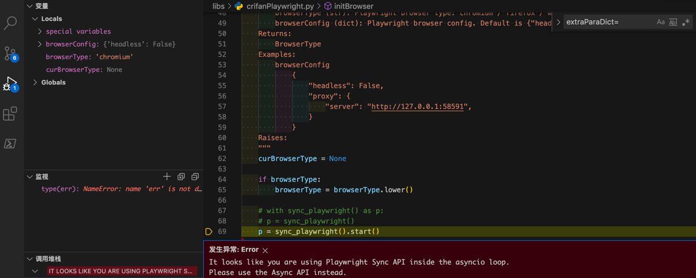

using Playwright Sync API inside the asyncio loop
背景
正常写了，初始化Playwright的sync的api的代码后：
def parseUrl(inputUrl, page=None):
"""Parse (redirected final long) url, title, html from input (possible short link) url
Args:
inputUrl (dict): input original (short link) url
page (Page): Playwright page. Default is None. If None, create a new one.
Returns:
parse result(dict)
Raises:
"""
respValue = None
if not page:
page = initPage()
def initPage(pageConfig=None, browser=None):
"""Init playwright browser new page
Args:
pageConfig (dict): page config. Default is None.
browser (BrowserType): Playwright browser. Default is None. If None, create new one
Returns:
Page
Examples:
pageConfig
{"pageLoadTimeout": 10}
Raises:
"""
if not browser:
browser = initBrowser()
。。。
def initBrowser(browserType="chromium", browserConfig={"headless": False}):
"""
For playwright, init to create a browser. For later use, such as google search
Args:
browserType (str): Playwright browser type: chromium / firefox / webkit
browserConfig (dict): Playwright browser config. Default is {"headless": False}.
Returns:
BrowserType
Examples:
browserConfig
{
"headless": False,
"proxy": {
"server": "http://127.0.0.1:58591",
}
}
Raises:
"""
curBrowserType = None
if browserType:
browserType = browserType.lower()
# with sync_playwright() as p:
# p = sync_playwright()
p = sync_playwright().start()
别处去调用，结果报错
发生异常: Error
It looks like you are using Playwright Sync API inside the asyncio loop. Please use the Async API instead.

以及：
后续类似代码：
def testParseSpeed(parseFunc, shortLinkList, testRoundNum, configDict):
for curRoundIdx in range(testRoundNum):
curRoundResult = parseShorLink_Common(parseFunc, shortLinkList, configDict)
->
def parseShorLink_Common(parseFunc, shortLinkList, configDict):
browser = crifanPlaywright.initBrowser(browserConfig={"headless": isCurHeadless})
->
def initBrowser(browserType="chromium", browserConfig={"headless": False}):
p = sync_playwright().start()
又报同样错误。
错误原因：Playwright的内部实现机制，个人感觉，虽然看起来很高级，但是实际上用起来很是麻烦。导致，如果你是多次循环类的调用，或者是Python中的函数作为参数等情况，去初始化browser时，就会被内部判断为，视为，异步调用。
解决办法：只能把代码，改为，整套代码运行期间，全局只能初始化一次browser。
否则如果有多次初始化调用sync_playwright().start()就会报错。
比如我此处最后的代码是：
elif parseFunc == crifanPlaywright.parseUrl:
# browser = extraParaDict["browser"]
# browser = extracPara["browser"]
# crifanPlaywright.closeBrowser(browser)
pass
即：单轮测试之前，不去close这个Playwright的browser
def testParseSpeed(parseFunc, shortLinkList, testRoundNum, configDict):
global gDnsFailedHost
extracPara = {}
# workaround for: It looks like you are using Playwright Sync API inside the asyncio loop
if parseFunc == crifanPlaywright.parseUrl:
isCurHeadless = configDict["headless"]
browser = crifanPlaywright.initBrowser(browserConfig={"headless": isCurHeadless})
extracPara = {
"browser": browser,
}
。。。
for curRoundIdx in range(testRoundNum):
。。。
curRoundResult = parseShorLink_Common(parseFunc, shortLinkList, configDict, extracPara)
即：testParseSpeed中把browser的初始化，只运行一次
还要把全局的移动到最顶层：
extracPara = {}
# workaround for: It looks like you are using Playwright Sync API inside the asyncio loop
isCurHeadless = configDict["headless"]
browser = crifanPlaywright.initBrowser(browserConfig={"headless": isCurHeadless})
for eachParseFunc in parseFuncList:
if eachParseFunc == crifanPlaywright.parseUrl:
extracPara = {
"browser": browser,
}
else:
extracPara = {}
testParseSpeed(eachParseFunc, shortLinkList, testRoundNum, configDict, extracPara)
。。。
def testParseSpeed(parseFunc, shortLinkList, testRoundNum, configDict, extracPara):
curRoundResult = parseShorLink_Common(parseFunc, shortLinkList, configDict, extracPara)
最终才实现了：代码全局只能和确保只初始化一次sync_playwright().start()，才能规避此报错。。。
感慨：用起来很是垃圾，不好用啊